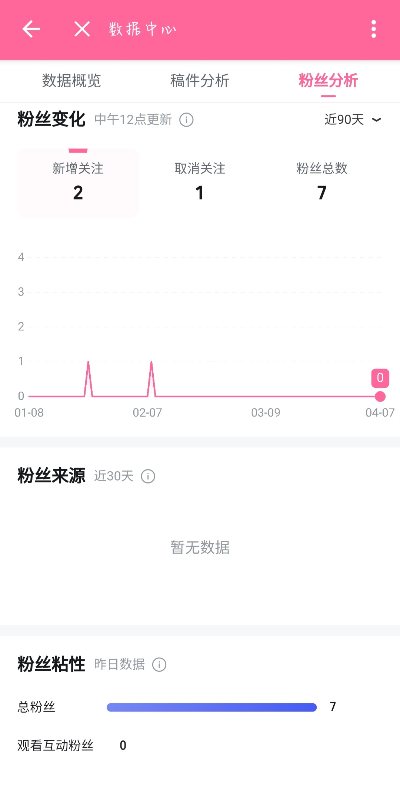
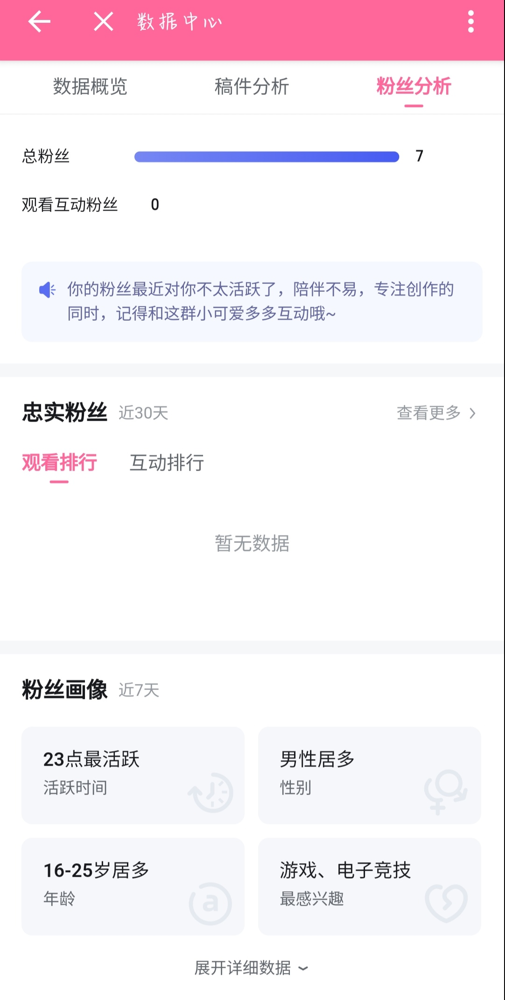
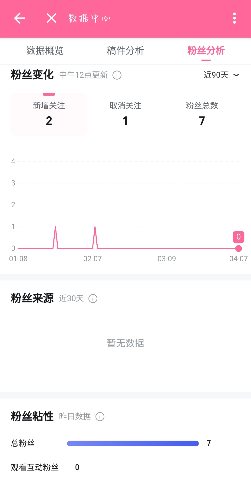
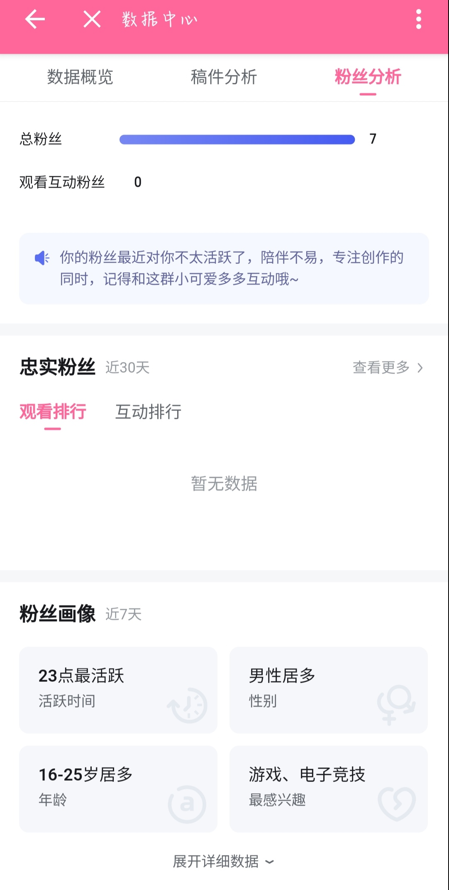
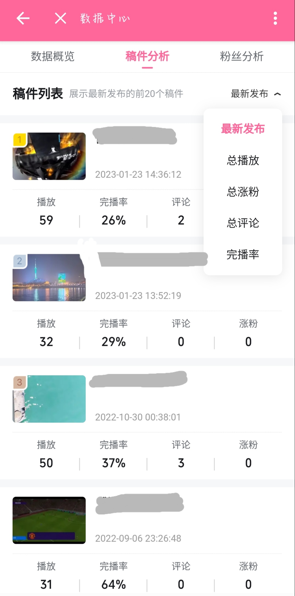
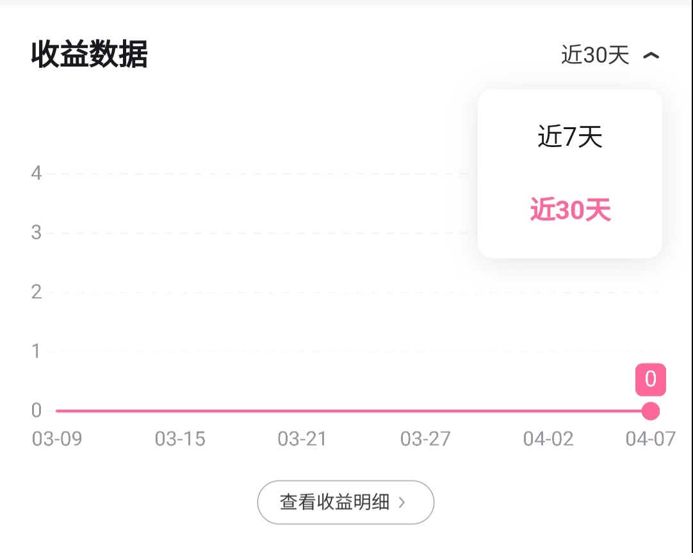

There are two kinds of situations. If your motivation of being an uploader is your interest, you may stick on your mind and do what you like. If you want to earn your living by making vedieos, you need to know what your fans would like to watch and by doing what can bring you more porfit.
 



Again, analysing data is useful when you want to find your way.
You can always figure out the thing you should do to meet with people's need after analysing the data of your videos, such as the the amount of play, the rate of people finish watching it, when did they leave, and how much new fans this videoe brings to you.
Different levels' of uploaders have different levels of power. Higher level's uploader will have more rights.
By looking for you level, you can get an cognition of what class of uploader are you now, what can you do to upgrade, and your future abilities.
You can monitor your earning data for further adjustments
You can add advertisments in or after your videos
This platform offers uploaders opportunities to receive advertising orders.
You need to balance the advertising and the quality of your videos. You want to make more money by adding advertisment, but this behavior may result in losing fans.
In general, you need to limit the quantity of your advertisment, make sure they are good advertisment which contain no cheating.
The best is, try to present your ads naturally. In other words, by using the normal content to naturally introduce the advertising content.
In Bilibili, people can charge for you and can give you coins. These things can be chaned into reali money.
Can you guarantee that all your videos are of high quality? Do you remember why you started as a uploader?
Different people can have different opinions. If you only cares about money or you live on this, it is OK to use as many methods as you can yo attract new fans and earn profit.
However, a good uploader should never forget to ensure the work produced is of high quality and meaningful.
Visit this video in a new window
Visit Bilibili Creation Centre
Visit Bilibili Creation Centre in a new window